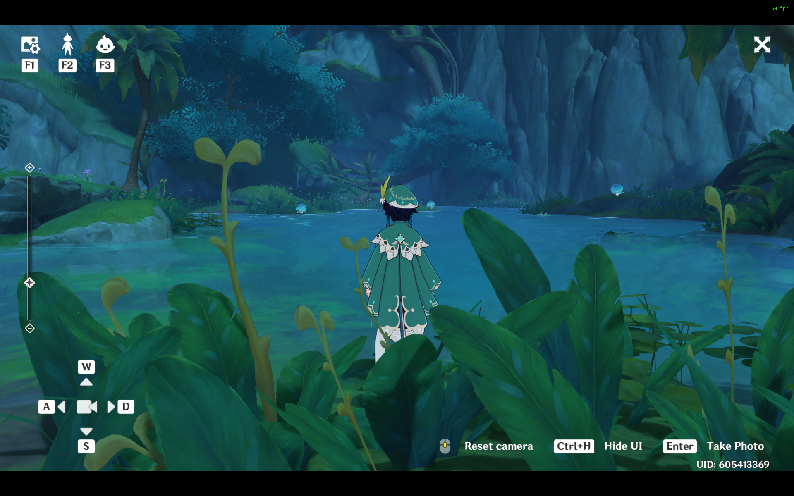
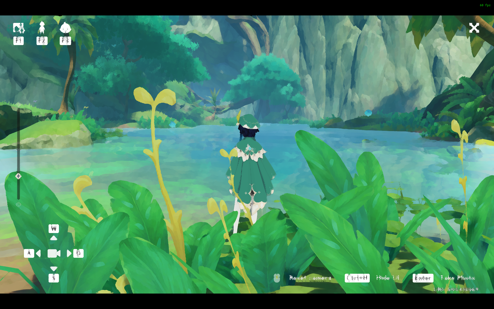
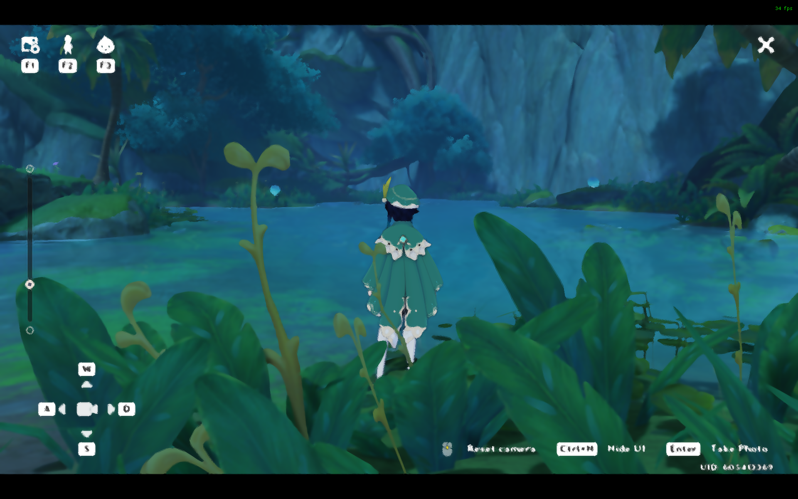
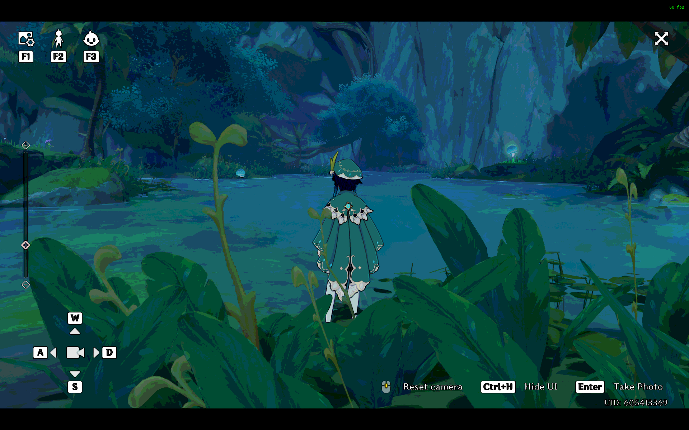

Genshin Shaders

The first part of our project was to create custom shaders for Genshin Impact, and we broke down this task into multiple parts:
- Injecting Shaders into Genshin Impact
- Creating the Kuwahara Filters
- Creating the Noir Shaders
- Creating the Cel Shaders
Injecting Shaders into Genshin Impact
In order to do this, we first needed to find a way to inject shaders into the game. Shaders are part of the rendering pipeline that most games do not expose to the end user, as game developers generally do not want the end user to make any modifications to their game. Such modifications are protected through the use of Anti-Cheat systems. Genshin Impact has an anti-cheat built in, and we found a way to bypass the anti-cheat and inject our own shaders.
We were able to find the Genshin-Impact-ReShade repository on GitHub that accomplished this exact task, and upon installation onto a Windows machine, we were able to inject the built-in shaders.
These shaders are written using ReShade FX, which is a shading language and compiler whose syntax is very closely related to HLSL.
To avoid getting Levy's actual Genshin Impact account from being banned, Levy created a new account for this project.
Creating the Kuwahara Filters
The first shader that we tackled was the Kuwahara Filter. The Kuwahara filter creates a painting-like flattening effect along the local feature directions, while preserving shape boundaries. This approach preserves edges, and we chose this approach over bilateral filters and mean shift filters due to its effectiveness over high and low contrast images. We created three different versions of the Kuwahara Filter: one based on square quadrants, one based on circular kernels, and one based on anisotropic kernels.
Kuwahara Filter Based on Square Quadrants
To create the Kuwahara filter based on square quadrants, we create a square filter that has four square quadrants that are each radius by radius large and overlap by one pixel, which is the current pixel that is being processed.

First, we calculate the following:

|W_k| is equivalent to the number of pixels in the quadrant we are computing, with r defined as radius.
Then, using the previous definition, we calculate the mean, m_k as the following:

We calculate the variance as the average of the square of the distance of each pixel to the mean, as the following:

In this model, we assume that the variances for each channel color do not correlate with each other, so this means that the final variance for W_k is going to be the following:

Now, the output value for our pixel at (x0, y0) is goint to be:

Here is the source code for our implementation of the Kuwahara filter based on square quadrants.
Here is a comparison between the base shaders with the square kuwahara shader.
 Kuwahara Filter Based on Circular Kernels
Next, we created the Kuwahara filter based on circular kernels. We first created different sectors of the circular filter that we were going to implement at a time, and this is adjacent to the idea of the square quadrants of the Kuwahara filter that uses the square quadrants. First, we calculate sigma_r and sigma_s to be the following, where the circular kernel's radius, K_size, is defined to be 32:

Then, we can calculate gaussians using standard deviations with sigma_r and sigma_s using the following formula:

Next, we can define our smooth weighting function w_k using the following formula:

Here, the x_k value is convolved with the gaussian that uses standard deviation of sigma_s, then the result is multiplied by sigma_r.
Now, the weighted mean m_k at a point (x0, y0) is defined as the following:

The convolution smooths the characteristic function such that the characteristic functions slightly overlap with one another. Also, notice how the sum of w_k is equivalent to a Gaussian filter, so this is why the mean m_k is calculated above.
Now, the weighted variance is defined as the following:

The output of our filter is a weighted average of the means with the variances. To refine our weighted average, we define alpha_k to be the following:

The final output for a pixel (x0, y0) is the following:

To implement this, w_k is actually fairly hard to compute, since computing it requires convolutions. Instead of computing w_k for every pixel, one at a time, we create a texture map that we can use to sample w_k that uses bilinear interpolation. Furthermore, since each sector of a circle is equivalent to one sector, rotated multiple times, so the w_k value will be calculated with the following function:

To sample a texture to get w_k, we created a compute shader dynamically using gaussian values that we generate on the fly. We call this texture K0.
Here is the source code for our implementation of the Kuwahara filter based on square quadrants.
Here is a comparison between the base shaders with the circular kuwahara shader.
Kuwahara Filter Based on Anisotropic Kernels
Finally, we implemented the hardest version of the Kuwahara filter, which is the Kuwahara filter with anisotropic kernels. In comparison to the kuwahara filter with circular kernels, the Kuwahara filter with anisotropic kernels changes the shape of the circle so that the circle can stretch and shrink in different directions so that the resulting ellipse's principal direction matches with the direction of the image's features. For instance, the pixel that we are sampling is at an edge, the circle will become an ellipse so that the principle direction of the ellipse will be along the edge.
This filter is by far the hardest to implement.
To accomplish this, we process the image at each pixel into multiple stages, as follows:

This means that we first calculate the structure tensor, then compute the gaussian filter and orientation/anisotropy, and finally filter and return the result.
The first step is to calculate the structure tensor from the RGB values of the input. If we let f be the input image, then S_x and S_y are the horizontal and vertical convolution masks of the Sobel edge detection filter:

The approximations of the partial derivaties of f are defined by the following: f_x = S_x convolved with f and f_y = S_y convolved with f.

Now, the structural tensor of f is defined as follows:

To get the structural tensor's eigenvalues and the eigenvector of the minimum rate of change, we do the following:


Now, the angle by which the ellipse is rotated is the following:

We calculate the measure of anisotropy to be the following, with 0 being isotropic and 1 being entirely anisotropic.

The next step is to compute the gaussian filter and orientation/anisotropy.
Recall that the equation of the rotated ellipse is the following:

Once we write this equation in standard form and plug in the values into the equation, we get the following:


We calculate the horizontal extrema where the partial derivative in the y direction vanishes to be as follows:

After we substitute this value of y into the ellipse, we get the equation:

This ellipse's horizontal and vertical extrema are as follows:


If we want to adjust the ellipse's eccentricity, or how flat/round the ellipse's shape is, we can introduce a new variable called α. With a very large α value, the a and b axes converge to 1, and with α = 1, we have a maximum eccentricity of 4. The values a and b are governed by this formula:

Now, to get the value w_k(x, y), we sample from the texture K0 that is defined in the above section using circular filters to get the following:

Note that in order to calculate w_k, we need the formula for S, which is:

Also note that S * R matrix maps points from the ellipse to a circle of radius 0.5.
We then apply the same logic as in the circular filter to compute the result of the filter.
Here is the source code for our implementation of the Kuwahara filter based on square quadrants.
Creating the Noir Shaders
In order to compute the noir shaders, we first need to determine whether a pixel is along an edge. We do this by implementing the sobel filter, and if the value output by the sobel filter is greater than a threshold, we can say that the pixel is along an edge. We compute that as follows:

Here, note that the G_x and G_y are the horizontal and vertical derivative approximations, and A is the source image. The two matrices are each convolved with the source image A.
Using these approximations, we calculate the gradient as follows:

If the gradient is greater than a variable called EdgeSlope which we have set to 0.23, we consider this pixel to be along an edge.
For pixels along an edge, we draw a white pixel and set the opacity value to be very high.
Otherwise, we color in the pixel value with a pencil texture, based on the average color channel's intensity value, 0.33 * (r + g + b).
TODO: WRITE ABOUT THE PENCIL TEXTURE
Here is a comparison between the base shaders with the noir pencil shader.
Creating the Cel Shaders
TODO: write description about how the cel shaders were created
Here is a comparison between the base shaders with the cel shader.
